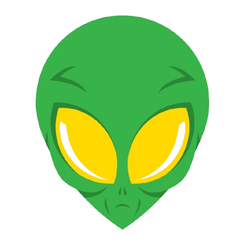

Middle School Science Learning Hub
LyfeLabz™
Interactive science, built for middle school.
Filter by grade and topic to find exactly what you're studying.
Filter Content
Select a grade and topic to get started
Grade
Topic
Explore
Choose Your Lab
Each lab may include:
Lesson
Simulation
Investigation
Extension
Challenge
Life Science
What Is Life?
What separates a living thing from a rock, a fire, or even a virus? Investigate the characteristics every organism shares, the discovery of cell theory, and why scientists still debate where the line of "alive" really falls.
Cell Types
If every living thing is built from cells, why is a bacterium nothing like a human? Explore how cells specialize and team up into tissues and organs, and why life evolved two very different cell designs, each with its own tradeoffs.
Cell Organelles
A single cell works like a bustling factory. Step inside to discover how each part, from the nucleus to the mitochondria, does a specific job that keeps the whole cell running.
Human Body Systems
Your heart, lungs, stomach, and brain never work alone. Explore how the body's systems connect and cooperate to keep you alive every second of the day.
Biological Evolution
How does a species change over millions of years? Uncover how natural selection reshapes living things, and how fossils and DNA record the story of life on Earth.
Parts of an Ecosystem
What connects a hawk, a blade of grass, and the soil beneath them? Explore how the living and nonliving parts of an ecosystem depend on one another to survive.
Photosynthesis
How can a plant build itself out of nothing but air, water, and sunlight? Uncover the process that captures the Sun's energy and feeds nearly every living thing on Earth.
Energy Flow in Ecosystems
Why are there always more plants than predators? Follow energy as it moves up the food chain and discover why so much of it disappears at every step.
The Carbon Cycle
How can the same carbon atom end up in a tree, a breath, and a rock? Track carbon as it cycles endlessly through living things, the air, the oceans, and the ground.
Ecosystem Stability
What happens when one species suddenly disappears? Investigate how a single change can ripple through an entire ecosystem and tip it out of balance.
Reproductive Success
Why do some animals dance, sing, or build to attract a mate? Explore the behaviors and plant structures that give living things a better chance of passing on their traits.
Human Impacts on Ecosystems
How do everyday human choices ripple through the natural world? Examine the ways people change ecosystems, and how those same systems can be protected and restored.
Earth & Space
Layers of Time
Rocks are a written record of Earth's past. Discover how different rocks form and what their stacked layers reveal about events from long before humans existed.
Continental Drift
What makes continents drift, mountains rise, and the ground shake? Explore how Earth's slowly moving plates reshape the surface over millions of years.
Gravity
Why do dropped objects fall, and why do planets circle the Sun instead of drifting away? Discover why gravity is always a pull, why it only stands out around very large masses, and how one force shapes the whole solar system.
Sun-Earth-Moon System
How gravity, orbits, and motion connect the Sun, Earth, and Moon into one system, including rotation, revolution, and the forces that keep it all balanced.
Phases of the Moon
Why the Moon appears to change shape every night: orbit, tidal locking, the 8 phases, and the 29.5-day lunar cycle explained.
Eclipses
Why solar and lunar eclipses are rare: orbital tilt, the umbra and penumbra, nodes, and the 400× coincidence that makes totality possible.
Earth's Place in the Universe
How big is everything, and where do we fit? Zoom out from Earth to the solar system, the Milky Way, and billions of galaxies to build one nested model of the universe.
Earth's Layers
What lies beneath your feet, all the way down to the center of the planet? Journey from the crust to the core to see how heat and motion deep inside Earth shape the surface we live on.
Plate Tectonics
Why is Earth's surface always on the move? Explore how giant plates slide, collide, and pull apart to build mountains, open oceans, and reshape continents over millions of years.
Earthquakes
What makes the ground suddenly shake? Discover how energy builds up and releases along faults, and why some places tremble far more often than others.
Types of Volcanoes
Why do some volcanoes erupt gently while others explode? Investigate how magma, gas, and rock decide whether an eruption quietly oozes or violently blows its top.
Hotspot Volcanoes
How can a chain of volcanoes rise in the middle of a plate, far from any boundary? Follow a trail of islands that reveals a plate drifting slowly over a deep, fixed source of heat.
Weathering & Erosion
How can solid rock turn into sand and soil? Explore the slow forces of water, wind, and ice that break mountains down and carry the pieces across the planet.
The Water Cycle
Where does rain come from, and where does it go next? Trace a single drop of water as it travels endlessly between the oceans, the sky, and the land.
Renewable & Nonrenewable Resources
Why do some energy resources run out while others never seem to? Compare the resources we depend on and the tradeoffs behind every choice we make to power our lives.
Physical Science
Measuring Matter
How can numbers describe a piece of matter? Learn how measuring mass, volume, and density lets scientists compare substances and even figure out what something is made of.
Physical Properties
How can you identify a material without changing what it is? Explore the physical properties, like hardness, melting point, and conductivity, that let us describe and sort matter.
Pure Substances & Mixtures
What's the difference between a pure substance and a mixture? Explore elements, compounds, solutions, and how mixtures can be separated.
Chemical Reactions
When new substances form, atoms rearrange. Investigate the signs of chemical change, conservation of mass, and reactions all around you.
Nature of Waves
What's actually moving when a wave travels? Investigate how waves transfer energy without moving matter, and discover the difference between mechanical and electromagnetic waves.
Wave Behavior
A door, a window, a brick wall - same sound, same light, three completely different outcomes. Explore how waves are reflected, absorbed, or transmitted when they hit different materials.
Digital Signals
How can a FaceTime call travel across the world and still sound clear? Discover digital signals, binary code, and the encode-transmit-decode journey.
Forms of Energy
Energy is never created or destroyed, so where does it actually go? Discover the many forms energy can take and how it constantly changes from one into another.
Energy Transfer
What makes a moving object speed up, slow down, or change direction? Explore how energy moves between objects to cause every change in motion around you.
Heat Transfer
Why does a metal spoon turn hot in soup while the handle stays cool? Investigate how thermal energy always flows from warmer things to cooler ones.
Introduction to Electricity
Why do you get a shock after shuffling across a carpet, and what does that have to do with lightning? Explore the invisible forces that push electric charge from place to place.
Tech & Engineering
How to Conduct Experiments
How do scientists know their results can be trusted? Learn to control variables, test a hypothesis, and turn a question into an experiment that gives real answers.
Engineering Design
How do engineers turn a problem into a working solution? Walk through the design process of building, testing, and improving that engineers use to tackle real-world challenges.
Design Tradeoffs
Why can't engineers make something faster, cheaper, and stronger all at once? Discover how every design balances competing goals, and how engineers decide what matters most.
Structural Systems
What keeps a bridge standing and a tower from toppling over? Explore how structures carry loads and stand up to the forces constantly pushing and pulling on them.
Transportation Systems
How does a car, plane, or train move people and goods from place to place? Break a transportation system into the smaller subsystems that each do a different job.
Communication Systems
How does a message travel across the world in an instant? Compare the systems that send information and figure out why each one fits a different situation.
Engineering Systems
Why can one small failure bring an entire system crashing down? Explore how the parts of a system interact, and why each one depends on the others to work.
Technology and Society
How can a single invention change the way millions of people live? Examine the ripple effects a technology can have on daily life, work, and the environment.
Innovation and Sustainability
How does technology keep getting better, and at what cost? Explore how engineers improve their designs while meeting human needs without harming the planet.
Behavioral Science
Rage Baiting & Media Manipulation
How outrage is engineered online, why your brain falls for it, and how to become a smarter media consumer.
Cognitive Biases
Why does a smart brain still make predictable mistakes? Discover the mental shortcuts, like confirmation bias and anchoring, that quietly shape how you think and decide.
Emotional Regulation & Social Influence
How emotions are processed, why peer pressure works, and strategies for managing your own responses.
🔍
No units yet for that combination
New content is added throughout the year. Check back soon, or try a different filter.
How It's Built
Designed for Learners
LyfeLabz makes reviewing science engaging, effective, and fun. Here's how every unit is structured.
Step 1
Read the Review
Clear notes and visual breakdowns cover every key concept. No textbook hunting required.
Step 2
Try the Activities
Interactive labs and extension pages help you apply what you've learned hands-on.
Step 3
Test Yourself
Practice quizzes give instant feedback and real explanations. Learn from every miss.
Step 4
Ace Your Test
Review your score, revisit weak spots, and walk into your exam with full confidence.
🧠 Behavioral Science unlocked
✕
Wonder Box ↗
